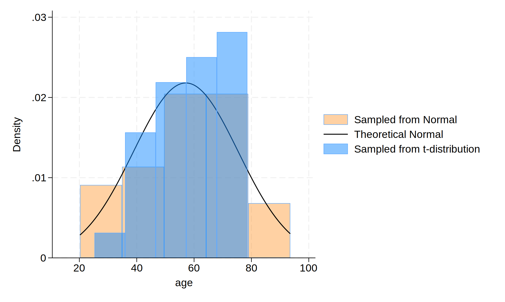

Methods: This is a simulated data and there is a total of 30 observations. The graph is shown as below.
. cls
. clear
. set obs 30
. gen age = (rnormal()*15)+57
. gen age_t = (rt(_N)*15)+57
.
. hist age, ///
> fcolor(orange%40) /// simulated normal
> addplot(hist age_t, fcolor(midblue%50)) /// simulated t-distribut
> ion
> normal /// theoretical normal
> legend(on ///
> lab(1 "Sampled from Normal") ///
> lab(2 "Theoretical Normal") ///
> lab(3 "Sampled from t-distribution") ///
> )
.
. graph export histogram.png, replace
.
.

.
.
. display c(N)
30
. display c(k)
2
. list in 1/5
+---------------------+
| age age_t |
|---------------------|
1. | 87.38382 77.73427 |
2. | 72.63947 53.71457 |
3. | 61.46569 51.67147 |
4. | 31.16803 74.93301 |
5. | 46.06201 60.6434 |
+---------------------+
Results: The results are based on simulated data.The results of the study shows that the distribution of $Age, years$ $~$ ~ $N$$( \mu = 57, \sigma^2 = 225)$ is to provide amathematical representation of the age distribution.